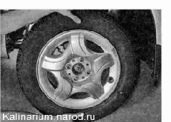
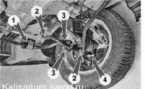
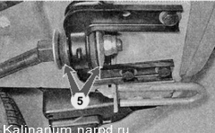
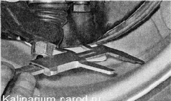

Проверка технического состояния передней подвескиПроверку технического состояния передней подвески необходимо выполнять в соответствии с регламентом периодического технического обслуживания. Оценить техническое состояние подвески можно во время движения автомобиля. При движении на небольшой скорости по неровной дороге подвеска должна работать без стуков, скрипов и других посторонних звуков. После переезда через препятствие автомобиль не должен раскачиваться. Совет Проверку подвески лучше совместить с проверкой состояния шин и подшипников ступиц колес. Односторонний износ протектора с наружной или внутренней стороны шины свидетельствует о нарушенной регулировке углов установки колес в передней подвеске. Для выполнения работы потребуется смотровая канава или эстакада. Последовательность выполнения 1. Подготавливаем автомобиль к выполнению работы. 2. Усилием рук покачиваем верхнюю часть переднего колеса автомобиля в поперечном направлении. Аналогично проверяем переднюю подвеску с другой стороны автомобиля. Если чувствуется люфт (даже малозаметный), то проверяем надежность крепления поворотного кулака к стойке передней подвески и состояние подшипника ступицы. Проверять работоспособность амортизаторов лучше после продолжительной поездки, пока рабочая жидкость в амортизаторах не остыла. 3. Энергично раскачиваем переднюю часть кузова автомобиля в вертикальном направлении. Если по инерции кузов продолжает совершать колебания (более двух перемещений вверх-вниз), после того как его перестали раскачивать, значит, неисправен один или оба амортизатора. Чтобы выявить неисправный амортизатор, повторяем проверку, прикладывая усилие сначала с одной стороны автомобиля, а затем с другой. Такая проверка позволяет выявить только неисправные амортизаторы. Проверить эффективность гашения колебаний амортизаторами можно только на специальном стенде. 4. Осматриваем стойки подвески. Подтекание жидкости из амортизаторов не допускается. Амортизаторы следует заменять парой, даже если второй амортизатор передней подвески исправен. 5. Визуально проверяем состояние подушек 1 и стоек 3 стабилизатора поперечной устойчивости, резин о металлических шарниров рычагов и продольных растяжек 2, чехлов шаровых опор 4... ...подушек поперечных растяжек 5. Шарниры и подушки с односторонним выпучиванием резины, разрывами и трещинами заменяем (см. ниже соответствующие разделы). 6. Проверяем затяжку гаек крепления деталей подвески, при необходимости подтягиваем их. 7. Осматриваем детали подвески. Деформация и усталостные трещины в деталях подвески не допускаются. Поврежденные детали заменяем. 8. Штангенциркулем измеряем расстояние между тормозным диском и поперечным рычагом. Если при покачивании кузова это расстояние изменяется более чем на 0,8 мм, то заменяем шаровую опору. Аналогично проверяем шаровую опору другой стойки передней подвески.  |